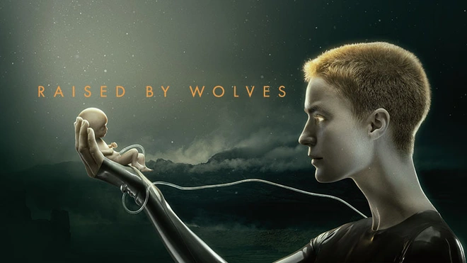
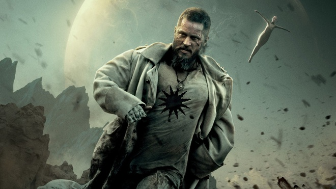
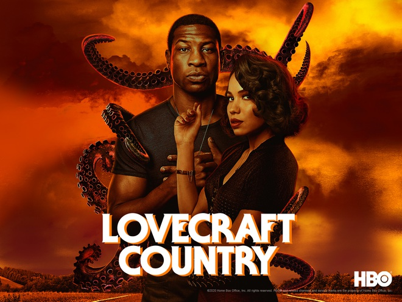
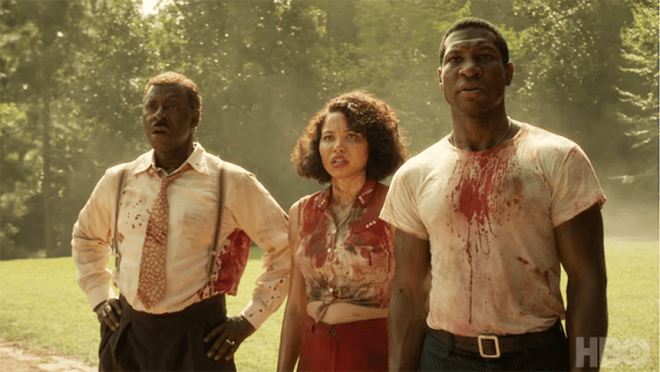
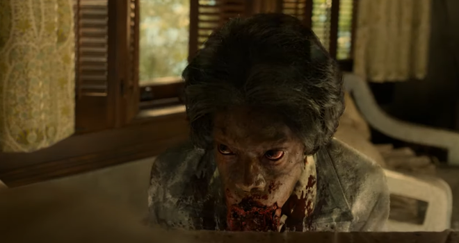
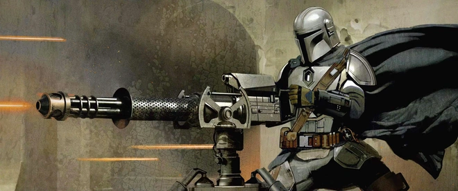
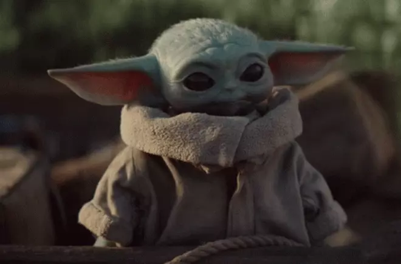
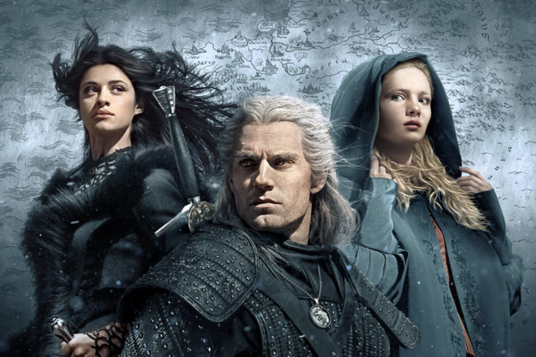
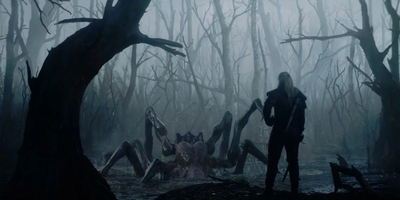

4 bom tấn có khả năng soán ngôi Game of Thrones: Mẹ Rồng cũng phải "tắt điện" trước Thánh mẫu robot bay như tiên n
Đã hơn 1 năm trôi qua kể từ khi bom tấn truyền hình Game of Thrones kết thúc, để lại nhiều tiếc nuối trong lòng người hâm mộ thế giới nói chung và khán giả Việt Nam nói riêng. Sự thành công vang dội của bộ phim càng khiến các hệ thống truyền hình mạnh tay “chốt đơn” những bom tấn dài tập với số tiền nhìn qua là thấy choáng.

Game of Thrones kết thúc, để lại ngai vàng trống vắng trong làng truyền hình thế giới
Cho đến thời điểm hiện tại, đã có nhiều cái tên mới xuất hiện với tầm cỡ khủng không kém cùng sự thể hiện được đánh giá rất cao, thậm chí nhiều bộ phim được so sánh sẽ soán ngôi vương mà Game of Thrones bỏ lại. Hãy cùng điểm qua một vài gương mặt “sừng sỏ” trong làng phim truyền hình Âu - Mỹ thời gian gần đây. Tất cả đều rất đáng xem và tạo được hiệu ứng lớn trong cộng đồng người hâm mộ.
1. Raised by Wolves: Bà thánh mẫu chẳng nể nang ai, dạy "con nhà người ta" nhưng nhiệt tình vô cùng luôn!
Được bảo chứng bởi cái tên đạo diễn Ridley Scott (người đã từng làm nên thành công của The Martian, Alien), Raised by Wolves là một bộ phim khoa học viễn tưởng dài 7 tập được chiếu trên hệ thống truyền hình trực tuyến HBO Max.

Bộ phim lấy bối cảnh sau khi Trái Đất bị hủy diệt bởi một cuộc chiến tranh và loài người phải tản ra khắp ngân hà để tìm nơi sinh sống. Hai người máy được gọi là Bố (Father) và Mẹ (Mother) đã được giao nhiệm vụ nuôi nấng một đám trẻ con trên hành tinh Kepler-22b. Raised by Wolves xoáy sâu vào những khái niệm liên quan tới đức tin của con người, đặt ra vấn đề về sự xung đột giữa tôn giáo - khoa học.

Một số hình ảnh "ảo lòi" của bộ phim đủ để thấy tầm cỡ khủng của Raised by Wolves
Đồng thời, Raised by Wolves còn khiến người xem mãn nhãn với phần hình ảnh, hành động hoành tráng chẳng khác nào một siêu phẩm chiếu rạp. Bộ phim cất công xây dựng lên một thế giới Kepler-22b trong tương lai xa xôi đầy bí ẩn cùng những phi thuyền, tàu bay chẳng khác nào Star Wars. Nhân vật chính của phim mang tiếng là robot đời cũ mà sở hữu siêu năng lực lạ kỳ, bay vèo vèo như tiên trên trời và không ngại “sát phạt” cả một quân đoàn để bảo vệ những đứa con của mình.
Hiện tại, phim đang được khán giả chấm điểm 85% trên hệ thống Rotten Tomatoes và các nhà phê bình, báo chí quốc tế cũng không ngớt lời ca ngợi Raised by Wolves. Thành công của phần đầu tiên đã nhanh chóng khiến HBO gật đầu làm tiếp phần 2 của phim.
2. Lovecraft Country - Xem mà tức sôi máu vì phân biệt sắc tộc kết hợp quái vật hù dọa đến “đứng hình”
Nếu bạn đã từng thích mê những bộ phim kinh dị như Get Out hay Us thì Lovecraft Country sẽ là phiên bản truyền hình nặng đô tiếp theo mà bạn cần theo dõi.

Bộ phim kể về Atticus Freeman - một người đàn ông trên hành trình đi tìm bố của mình trong những năm 1950, thời mà nước Mỹ còn đang nặng nề vấn đề phân biệt sắc tộc. Nhân vật chính không chỉ phải chịu sự kinh hoàng của nạn phân biệt chủng tộc mà còn phải đối mặt với những con quái vật kinh dị tưởng như chỉ có trong truyền thuyết.

Bộ phim được đánh giá cao với phần hình ảnh rợn người
Lovecraft Country được sản xuất bởi HBO với hai cái tên bảo chứng là J. J. Abrams và Jordan Peele sẽ làm khán giả phải hết hồn với những cơn ác mộng mà bộ phim mang lại. Sau khi ra mắt, phim đã được đắm chìm trong vô vàn lời khen ngợi của các trang báo lớn cũng như khán giả thế giới. Nhiều người miêu tả bộ phim điên cuồng mà vẫn nghiêm túc, sáng tạo và mang đầy chất riêng với điểm "tươi roi rói" là 87%.
3. The Mandalorian - hàng xịn của vũ trụ Star Wars được thế giới khen nức nở
Vũ trụ Star Wars kể từ khi về tay Disney đã không ngừng lớn mạnh, với một trong những cái tên đáng chú ý nhất chính là bộ phim truyền hình The Mandalorian được chiếu trên hệ thống Disney . Phim đã nhận được đề cử Emmy cho hạng mục Series truyền hình chính kịch xuất sắc nhất, đồng thời thắng 7 hạng mục sáng tạo.

Series lấy bối cảnh 5 năm sau phần phim Return of the Jedi, theo dấu một thợ săn tiền thưởng tại một thiên hà xa rất xa, với mỗi tập phim kể về một nhiệm vụ đặc biệt của anh. The Mandalorian mặc dù chỉ có 8 tập phim nhưng kinh phí mà Disney rót vào lên đến tận 100 triệu đô, giải thích cho phần hình ảnh ấn tượng không thua kém gì Star Wars bản điện ảnh. Một trong những chi tiết fan thích nhất của The Mandalorian chính là sự xuất hiện của The Child, hay còn được gọi yêu là "Baby Yoda" nhìn chỉ muốn nựng.

Nhân vật chính của phim còn chẳng bao giờ thèm bỏ mũ ra nhưng vẫn siêu ngầu
Yoda nhí từng khiến cả cộng đồng mạng khoái chí
Phim nhanh chóng mang về thành công lớn mạnh và trở thành cái tên sáng giá nhất trong danh sách các sản phẩm của Disney . Mùa đầu tiên của phim đạt con số ấn tượng 93% trên bảng đánh giá Rotten Tomatoes, và fan cũng đang rất nóng lòng chờ đợi sự xuất hiện của mùa phim thứ 2 sẽ ra mắt vào cuối tháng 10 tới đây.
4. The Witcher - Thế giới yêu quái ma thuật đầy mê hoặc, đã vậy còn có "Superman" Henry Cavill làm dân tình ngất ngây!
Bộ phim có khả năng cao nhất để soán ngôi Game of Thrones có lẽ chính là The Witcher của Netflix.

Vũ trụ đầy phép thuật và quái vật của The Witcher mở ra những câu chuyện huyền hoặc khiến khán giả phải chết mê chết mệt. Với sự tham gia của Superman - tài tử Henry Cavill quyến rũ, bộ phim được đầu tư tới tận 10 triệu đô cho một tập, chính vì vậy phần hình ảnh và kỹ xảo luôn luôn vượt mức mong đợi. The Witcher cũng không ngần ngại đi “tới bến” với những pha hành động rất máu me và những phân đoạn tình dục nóng bỏng mắt giữa các diễn viên chính. Nhiều người còn so sánh bộ phim như một sự kết hợp giữa Game of Thrones và The Lord of the Rings.

The Witcher không chỉ có một thế giới huyền bí mà còn đầy rẫy những âm mưu, thủ đoạn càng xem càng thấy hấp dẫn
Với khán giả Việt, có lẽ The Witcher là series duy nhất giành được tiếng tăm lớn và thu hút phần đông người hâm mộ. Sức hút của phim cũng nhanh chóng mở đường cho phần 2 và một series độc lập khác mang tên The Witcher: Blood Origin cùng chung vũ trụ.